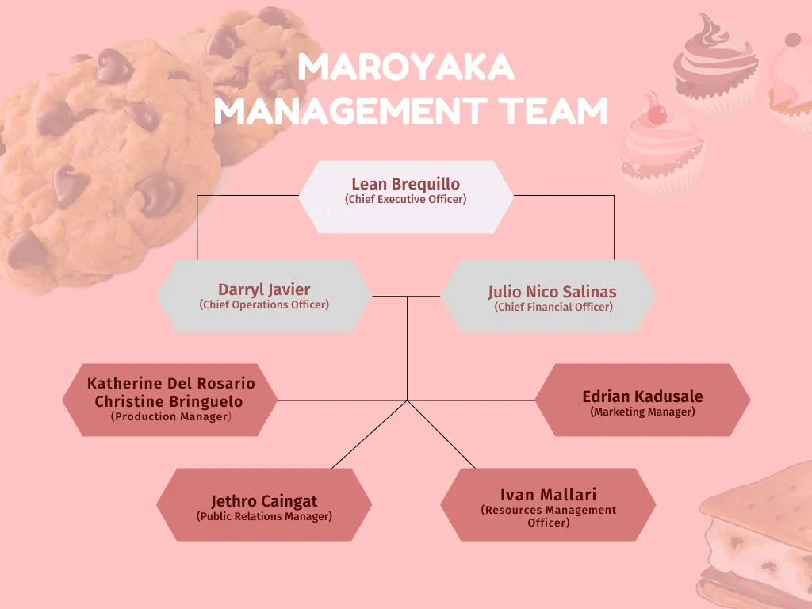

Executive Summary
Maroyaka offers a unique touch to the classic snack go-to of the people.
Desserts such as cupcakes, cheesecakes, graham balls, and cookies can
blissfully satisfy target potential customers’ cravings by providing
them easy access to these sweet delicacies that can be bought at a fair
price. Most Filipinos have a sweet tooth and at most family gatherings,
sweet delicacies must be on the table. Data based on Filipinos’ Google
searches showed that since the pandemic started in the country,
Filipinos’ sweet cravings have intensified. One reason is that the
pandemic has limited people’s outdoor activities in which they couldn’t
buy foods that they want to eat unless they have stocks in their house.
This heightened interest in sweets and pastries among Filipinos led to
an increase in the number of food trends and the number of people
resorting to online selling which includes baked goods.
Many entrepreneurs including the younger ones have imparted their baking
skills and experiences to make money from their passion. However, some
of these entrepreneurs are not able to meet such customers’ demands due
to their products’ price and quality. In accordance with this, young
entrepreneurs at Pasig City Science High School came up with the idea of
opening a small business in which they can use their passion and skills
for baking in carefully and delightedly crafts luscious pastries and
cakes. Our primary strategy is to focus on utilizing social media reach
on different platforms such as Facebook, Twitter, Instagram, and TikTok.
The continuous increase in popularity of different social media
platforms can be the right way to promote the starting small business of
Sucre Jar Company. Maroyaka. Through social media platforms, target
potential customers could turn into buyers by means of sharing updates,
reviews, and other relevant information related to product offerings.
Moreover, sending news and updates through email addresses customer
provides will be one of the marketing strategies the company is planning
to utilize. A web page will be used as well to host ordering and buying
our products online. Customers have an option to pick up their orders or
have it delivered to the comfort of their homes through their preferred
courier including the Grab Express, Lalamove, and Mr. Speedy.
Overall, Maroyaka has a number of competitive features and the fact that
we offer a unique touch to the classic snack go-to of the people. Also,
the recipe is crafted to fit the general likings of the masses by still
being able to show the character of the company through the taste and
aesthetics. Lastly, Maroyaka offers a significant price decrease while
maintaining and surpassing the qualities of a good product through the
efficient use of the materials and ingredients the company wields.
Initial capitalization for the business is Php 10,911.00
Management and Organization
Sucre Jar
1815 Kalawakan St., Karangalan Village, Manggahan, Pasig City


